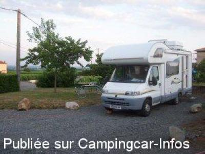

APN = Parking toléré jour/nuit de :
VILLIÉ MORGON
(N° 848)
Accès/adresse :
Les Presles
Domaine de la Levratière
69910 VILLIÉ-MORGON
Domaine de la Levratière
69910 VILLIÉ-MORGON
Latitude : (Nord) 46.15111° Décimaux ou 46° 9′ 3′′
Longitude : (Est) 4.66914° Décimaux ou 4° 40′ 8′′
Tarif : Gratuit
Services :


Possibilité eau et électricité
Pêche en étang privé à disposition
Dégustation des vins de Morgon, Fleurie, Régnié et Chiroubles
Autres informations :
Aire privée de Marylenn et André Meyran
Tél : +33(0)474 691 180

Le 08/07/2005 par gerry
de
Geay Stéphanne
le 21/08/2006 :
Bon accueil, excellent vin, belle région, vignerons sympas.... A ne pas rater sur la route des vacances.
Trop gros camping-car, s'abstenir, car montée difficile !
Bon accueil, excellent vin, belle région, vignerons sympas.... A ne pas rater sur la route des vacances.
Trop gros camping-car, s'abstenir, car montée difficile !
de
Gerry
le 08/07/2005 :
Beautiful scenery in Beaujolais country. A little difficult to find. Actually in the village of Morgon.
Beautiful scenery in Beaujolais country. A little difficult to find. Actually in the village of Morgon.